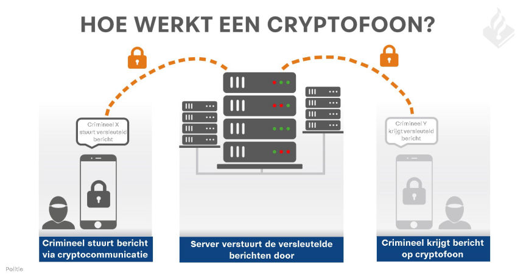
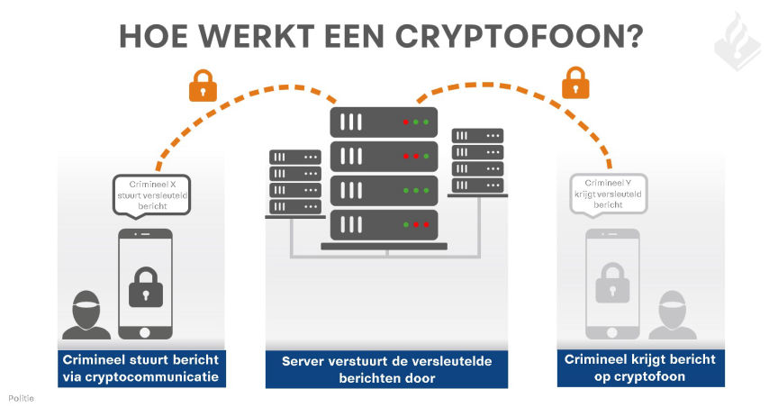

Netherlands: 14 Arrested in International Drug Bust
~4 min read | Published on 2018-11-08, tagged Arrested, Darkweb-Vendor, Drug-Bust, Drugs, General-News using 836 words.
Many kilos of hard drugs, money and bitcoins were found on Tuesday, November 6, during a police operation in Overijssel, Drenthe and Limburg. The search was the result of a long-running investigation into drug production and drug trafficking via the darkweb. The suspects in this investigation communicated via cryptophones. Part of their communication was intercepted by the police in an announcement that was published on Tuesday.[img=]Infographic of the encryption cracking[/img]
The second announcement follows the original one posted below.Original Press Release
The police investigation focused on the roll-out of drug production and trafficking, to provide insight into which money flows and to confiscate criminal assets. That is why a long time research has been done to get a picture of how a group of suspects worked.
Locations in Enschede, Hengelo, Emmen and Roermond came into the picture. At those locations the police went in on Tuesday, sometimes with the assistance of an arrest team. In total, more than 25,000 euros of cash and bitcoins were found. Also expensive jewelry and five cars were confiscated.
Furthermore, more than fifty kilos of hard drugs came up, presumably it is about speed and XTC. A machine was also found that can be used in the production of XTC pills. A total of five people were arrested. The arrested persons are a 54-year-old man and a 52-year-old woman from Roermond, a 29-year-old man from Hengelo, a 27-year-old man from Enschede and a 27-year-old man from Emmen.
In the coming period, the police will continue to investigate the suspects and their activities. They are heard about their involvement. In addition, seized data carriers will be further investigated. The suspects are currently in all restrictions, which means that they can only have contact with their lawyer. That is why the police do not give any further information about this case.
Source: Politie.nl

Follow-up Press Release
Apeldoorn - Police and the Public Prosecution Service have achieved a breakthrough in the interception and decryption of encrypted communication between criminals. Criminals thought they could safely communicate with so-called cryptophones, who used the Ironchat application. Experts from the police in the east of the Netherlands have succeeded in gaining access to this communication and decrypting it. As a result, the police have been able to watch live for some time with the communication between criminals.[img=][/img]
The server on which the encrypted communication took place was discovered after the police in the east of the Netherlands, in a money laundering investigation, found a supplier of the cryptophones. <br>With these cryptophones, which cost thousands of euros, only instant messages can be sent. By using an own computer server that encrypted the communication, the data traffic became invisible to the authorities.
The owner of the company, a 46-year-old man from Lingewaard, and his partner, a 52-year-old man from Boxtel, have been arrested. They are suspected of money laundering and participation in a criminal organization. Their homes and the company have been searched. There have been searches in various places in the country.<h4 id="unique-insight">Unique insight </h4>
“This operation gave us a unique insight into the criminal world in which we freely communicated about criminal offenses”, says Aart Garssen, Head of the Regional Investigation Service in the Eastern Netherlands. “Of course this has also led to a number of results. For example, we rolled up a drug lab in Enschede. We have also found more than € 90,000 in cash in various campaigns, automatic weapons and large quantities of hard drugs (including MDMA and cocaine). In addition, we received an imminent retaliatory action in the criminal circuit of Twente. Four arrests have been made this morning. This brings the total number of arrests today to 14 “, says Garssen.<h4 id="good-information-position">Good information position </h4>
This operation started after there were sufficient concrete indications that a man from Lingewaard sold cryptophones to criminals. The police and the Public Prosecution Service are taking action against people who help criminals by making their activities possible. Thanks to this operation, the police and the Public Prosecution Service have been given a good information position. More than 258,000 chat messages have been read and that yields a lot of information. This information can lead to decisive breakthroughs in ongoing investigations. The data can also be used to start new criminal investigations. In this way, evidence has been obtained in ongoing investigations and new criminal activities can be stopped.<h4 id="server-and-website-offline">Server and website offline </h4>
The server and website of the provider of the cryptophones have now been taken offline. This important communication channel, with which criminals thought themselves unspoken, belongs to the past.
Garssen: “We step outside today because we got the message traffic that criminals were suspicious because of police action at various actions. They suspected each other of information leak to the police. This mistrust among the users of the phones towards each other can lead to reprisals. Now we make it clear that the police intervened on the basis of intercepted communication. "<h4 id="documents">Documents </h4>
As a result of the research, a Factsheet and an [Infographic have been](
At this moment the police do not go into more detail about actions that have taken place today because these are ongoing investigations and this can damage these investigations.
Source: Politie.nl
The second announcement follows the original one posted below.Original Press Release
The police investigation focused on the roll-out of drug production and trafficking, to provide insight into which money flows and to confiscate criminal assets. That is why a long time research has been done to get a picture of how a group of suspects worked.
Locations in Enschede, Hengelo, Emmen and Roermond came into the picture. At those locations the police went in on Tuesday, sometimes with the assistance of an arrest team. In total, more than 25,000 euros of cash and bitcoins were found. Also expensive jewelry and five cars were confiscated.
Furthermore, more than fifty kilos of hard drugs came up, presumably it is about speed and XTC. A machine was also found that can be used in the production of XTC pills. A total of five people were arrested. The arrested persons are a 54-year-old man and a 52-year-old woman from Roermond, a 29-year-old man from Hengelo, a 27-year-old man from Enschede and a 27-year-old man from Emmen.
In the coming period, the police will continue to investigate the suspects and their activities. They are heard about their involvement. In addition, seized data carriers will be further investigated. The suspects are currently in all restrictions, which means that they can only have contact with their lawyer. That is why the police do not give any further information about this case.
Source: Politie.nl

Infographic of the encryption cracking
Follow-up Press Release
Apeldoorn - Police and the Public Prosecution Service have achieved a breakthrough in the interception and decryption of encrypted communication between criminals. Criminals thought they could safely communicate with so-called cryptophones, who used the Ironchat application. Experts from the police in the east of the Netherlands have succeeded in gaining access to this communication and decrypting it. As a result, the police have been able to watch live for some time with the communication between criminals.[img=][/img]
The server on which the encrypted communication took place was discovered after the police in the east of the Netherlands, in a money laundering investigation, found a supplier of the cryptophones. <br>With these cryptophones, which cost thousands of euros, only instant messages can be sent. By using an own computer server that encrypted the communication, the data traffic became invisible to the authorities.
The owner of the company, a 46-year-old man from Lingewaard, and his partner, a 52-year-old man from Boxtel, have been arrested. They are suspected of money laundering and participation in a criminal organization. Their homes and the company have been searched. There have been searches in various places in the country.<h4 id="unique-insight">Unique insight </h4>
“This operation gave us a unique insight into the criminal world in which we freely communicated about criminal offenses”, says Aart Garssen, Head of the Regional Investigation Service in the Eastern Netherlands. “Of course this has also led to a number of results. For example, we rolled up a drug lab in Enschede. We have also found more than € 90,000 in cash in various campaigns, automatic weapons and large quantities of hard drugs (including MDMA and cocaine). In addition, we received an imminent retaliatory action in the criminal circuit of Twente. Four arrests have been made this morning. This brings the total number of arrests today to 14 “, says Garssen.<h4 id="good-information-position">Good information position </h4>
This operation started after there were sufficient concrete indications that a man from Lingewaard sold cryptophones to criminals. The police and the Public Prosecution Service are taking action against people who help criminals by making their activities possible. Thanks to this operation, the police and the Public Prosecution Service have been given a good information position. More than 258,000 chat messages have been read and that yields a lot of information. This information can lead to decisive breakthroughs in ongoing investigations. The data can also be used to start new criminal investigations. In this way, evidence has been obtained in ongoing investigations and new criminal activities can be stopped.<h4 id="server-and-website-offline">Server and website offline </h4>
The server and website of the provider of the cryptophones have now been taken offline. This important communication channel, with which criminals thought themselves unspoken, belongs to the past.
Garssen: “We step outside today because we got the message traffic that criminals were suspicious because of police action at various actions. They suspected each other of information leak to the police. This mistrust among the users of the phones towards each other can lead to reprisals. Now we make it clear that the police intervened on the basis of intercepted communication. "<h4 id="documents">Documents </h4>
As a result of the research, a Factsheet and an [Infographic have been](
https://www.politie.nl/binaries/content/assets/politie/nieuws/2018/02-on/cryptofoon-infographics2-laatste-versie.jpeg"
type=“jpg” >}} made.<h4 id="actions">Actions </h4>At this moment the police do not go into more detail about actions that have taken place today because these are ongoing investigations and this can damage these investigations.
Source: Politie.nl